1954
20 世纪长江三次全流域性大洪水之一（另两次为 1931、1998）。汛期洪峰接连出现，干堤险情不断，先后启用荆江分洪区等分蓄洪措施保武汉、保江汉平原。据《中国气象灾害大典》，仅湖北一省受灾人口就达 1034 万、因灾死亡约 3.1 万人。此灾直接推动此后长江防洪体系与分蓄洪区建设。
20 世纪长江三次全流域性大洪水之一（另两次为 1931、1998）。汛期洪峰接连出现，干堤险情不断，先后启用荆江分洪区等分蓄洪措施保武汉、保江汉平原。据《中国气象灾害大典》，仅湖北一省受灾人口就达 1034 万、因灾死亡约 3.1 万人。此灾直接推动此后长江防洪体系与分蓄洪区建设。
7.8 级地震在深夜袭来，震中恰在人口稠密的工业城区，市区约 92% 的居民楼严重破坏，百年工业城市几乎瞬间夷为平地，铁路、供水、供电、通信全部中断。24.2 万余人死亡、16.4 万余人重伤，是 20 世纪世界上人员伤亡最惨重的地震。
因林场工人违规操作引燃汽油，多个林场几乎同时起火，成为新中国成立以来最严重的特大森林火灾。5.88 万军民经过 28 个昼夜扑救才将大火扑灭。火场总面积约 1.7 万平方千米（含境外部分），境内森林受害面积 101 万公顷，5 万余灾民无家可归。火灾直接推动了《森林防火条例》的完善与全国森林防火体系建设。
继 1931、1954 之后，20 世纪第三次长江全流域性特大洪水，同时嫩江、松花江出现超历史纪录洪水。长江干堤险情频发，九江决口成功封堵，百万军民上堤死守，形成广为人知的「抗洪精神」。灾后国家大规模推进退田还湖、堤防加固与长江防洪体系建设。
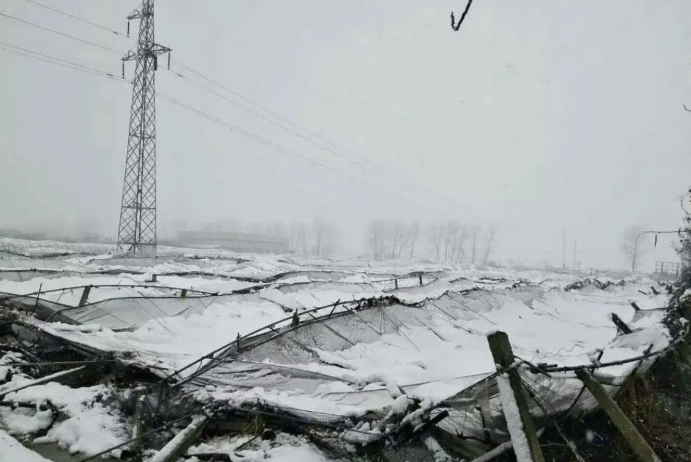
连续四轮低温雨雪冰冻过程袭击南方，输电线路与铁塔因覆冰大面积倒塔断线，贵州、江西等省级电网一度解列；京广铁路、高速公路与机场大面积中断，广州等地车站滞留旅客数十万，恰逢春节返乡高峰，电煤供应亦告急。全国受灾人口超 1 亿，直接经济损失 1516.5 亿元。
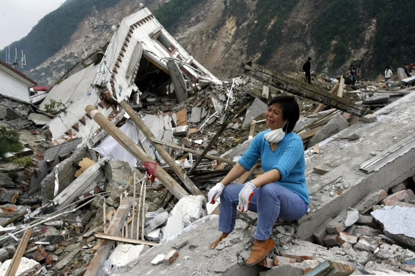
8.0 级，新中国成立以来破坏性最强、波及范围最广、救援难度最大的地震。北川、映秀等重灾区大面积塌方，山体滑坡与堰塞湖并发，直接严重受灾面积约 10 万平方公里。全国范围展开抗震救灾与对口支援，5 月 19—21 日首次为普通遇难者设立全国哀悼日。
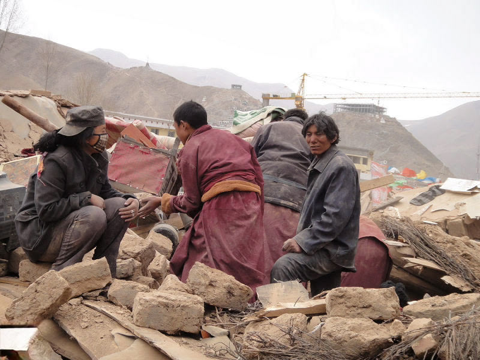
7.1 级，震中紧邻县城，结古镇大量土木、砖木结构房屋倒塌。灾区平均海拔 4000 米以上，高寒缺氧、昼夜温差大，救援与高原病防治难度极高。国务院于 4 月 21 日举行全国哀悼活动，灾后按生态保护要求整体规划重建。
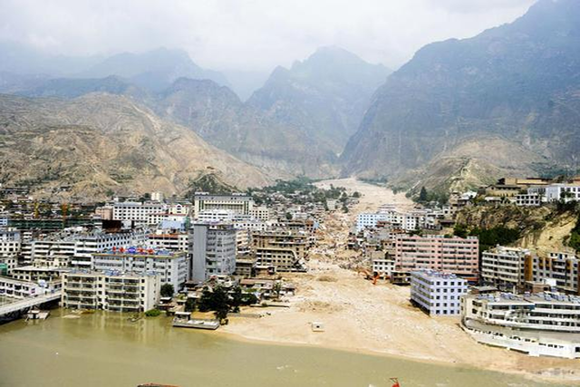
40 多分钟内降雨近 97 毫米，三眼峪、罗家峪等沟系同时暴发泥石流，冲出物约 750 万立方米，泥石流带长约 5 公里、平均宽 300 米，县城约三分之二区域被淤埋，白龙江河道被堵形成堰塞体。8 月 15 日举行全国哀悼活动。
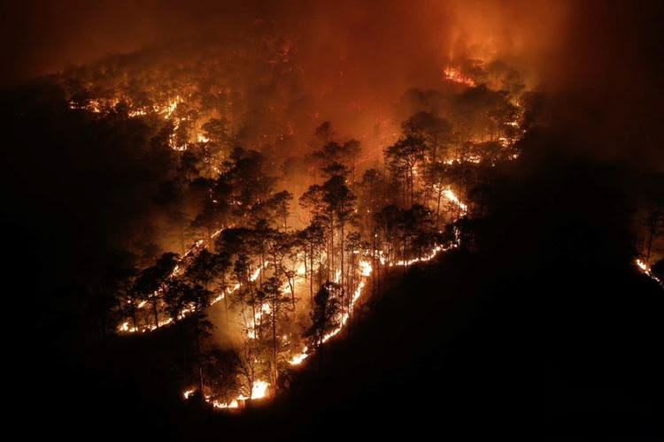
15 时许泸山起火，连续 20 天无降雨、湿度仅 5%—10%，风力 7—8 级，火势借风迅速蔓延，威胁山下城区、油气储配站与学校等设施，紧急疏散 1.8 万余人。宁南县专业打火队在集结途中遇风向突变示警失联，最终 19 人牺牲。省政府调查认定，起火系特定风力下电力线路引流线放电引燃杂草所致。
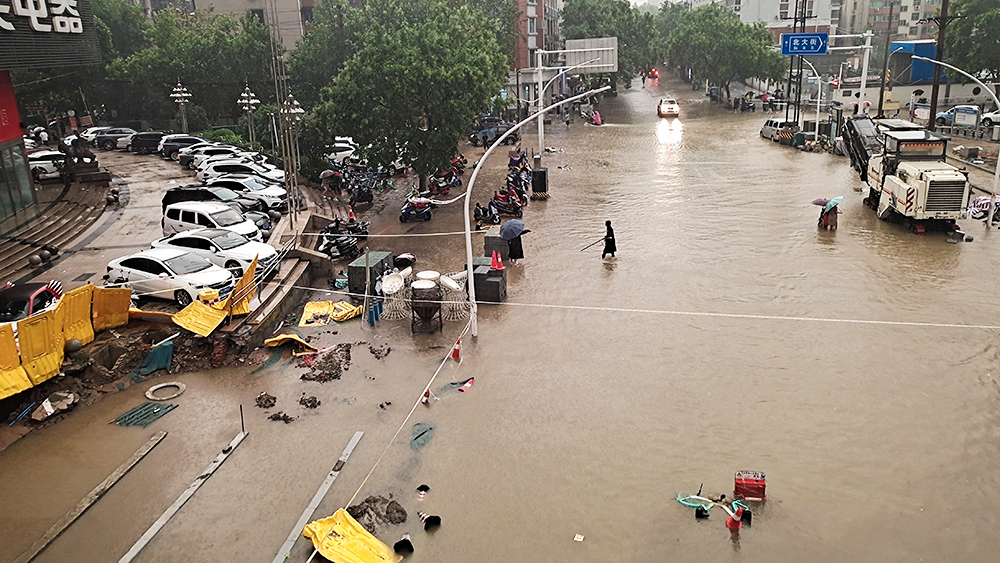
小时雨强突破中国大陆气象观测纪录，三天降雨量超过郑州常年全年平均。极端暴雨导致城市内涝、河流洪水、山洪滑坡多灾并发，地铁 5 号线与京广路隧道发生严重伤亡。国务院调查组认定为特别重大自然灾害，并于 2022 年 1 月公布调查报告，推动城市地下空间与地铁防洪标准全面修订。
8 月 21 日 22 时 30 分许北碚虎头村突发山火，火势迅速逼近缙云山国家级自然保护区。当地正经历有气象记录以来最高温，北碚最高气温达 44.6℃。山路陡峭车辆难行，数百名越野摩托骑士自发组成「摩托大军」，昼夜不停向火线运送物资；消防采用「以火攻火」点烧战术，8 月 26 日 8 时 30 分明火全部扑灭，实现无人员伤亡和重要设施损失。这场「人民防线」成为全民记忆。
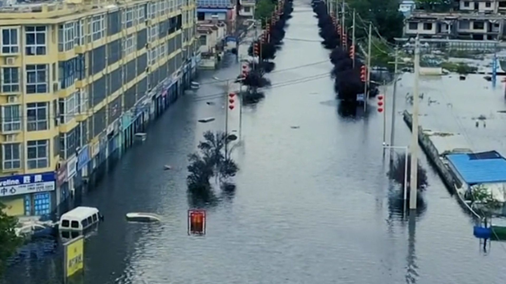
台风「杜苏芮」残余环流北上，受地形抬升与副高阻挡，在京津冀形成持续极端强降水，北京出现有仪器记录以来最强降雨过程之一。永定河、拒马河等河流行洪压力骤增，门头沟、房山山洪冲毁道路桥梁，涿州部分村镇长时间被洪水围困，国家陆续启用多处蓄滞洪区。
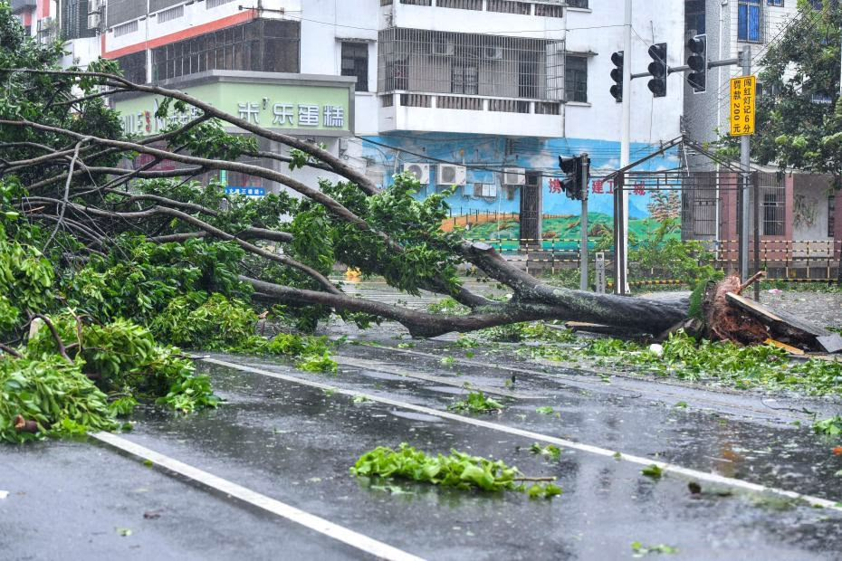
有气象记录以来秋季登陆我国的最强台风，也是近 10 年登陆我国最强台风。登陆前后海南转移逾 41 万人、广东陆上提前转移 57 万余人；过境后海口、文昌等地大量树木倒伏，风机、电力与通信设施受损，城市修复持续数周。
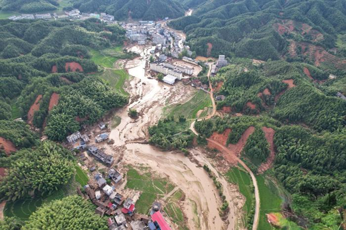
台风「格美」残余环流带来极端强降雨，局地雨量突破历史极值，资兴多个乡镇遭遇山洪、滑坡与泥石流，道路、通信一度中断形成「孤岛」，武警、消防与民间救援力量徒步进山转移群众、抢通生命通道。
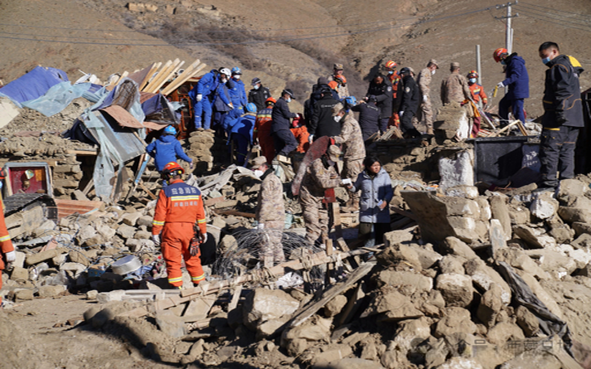
高原高寒地区发生的强震，震中周边大量土木结构房屋倒塌。低温、缺氧与道路受损给搜救带来极大挑战，定日县消防救援大队半小时抵达震中，解放军、武警及各方救援力量随后展开大规模转移安置。该事件位列 2025 年全国十大自然灾害之首。
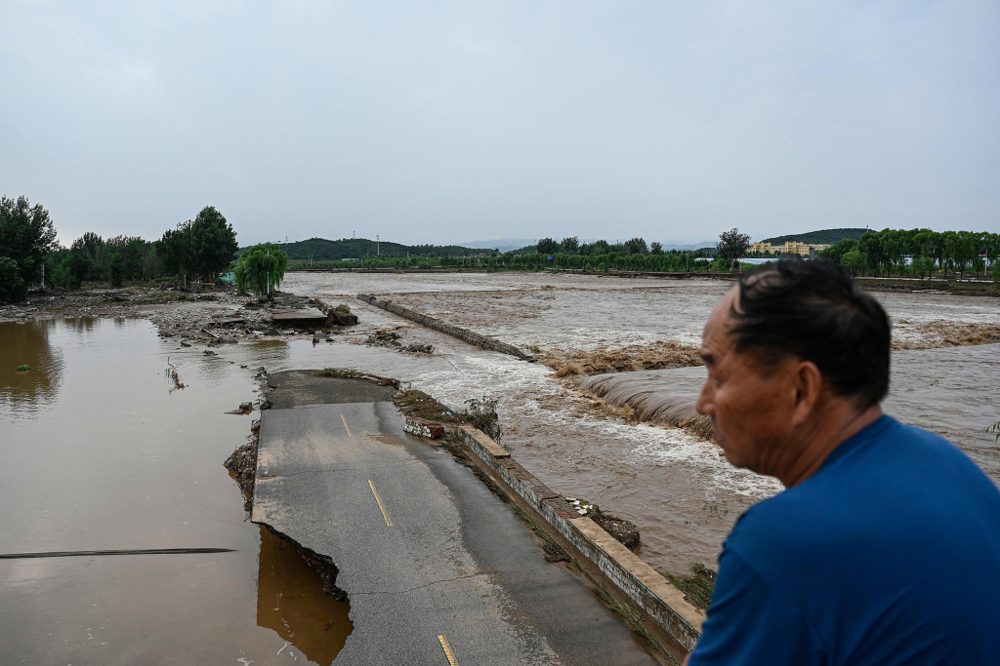
华北、内蒙古和东北出现特强降雨，海河流域发生区域性大洪水，北京密云局地最大降水超 300 毫米。山区山洪冲毁道路桥梁，部分村镇一度失联，多地启动紧急转移安置。按全年口径，7 月下旬这轮北方强降雨共造成 198 人死亡失踪、直接经济损失 768.3 亿元。
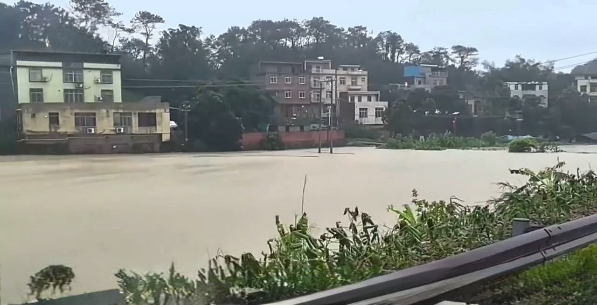
移速缓慢、陆上维持时间长，给广西带来历史罕见的大范围持续性强降雨，引发水库溃坝、城镇严重内涝与山体滑坡；西江、郁江等 109 条河流 182 站次出现超警洪水，涠洲岛超万名游客提前撤离，北上过程还诱发罕见龙卷。与民间救援力量徒步进山转移群众、抢通生命通道。
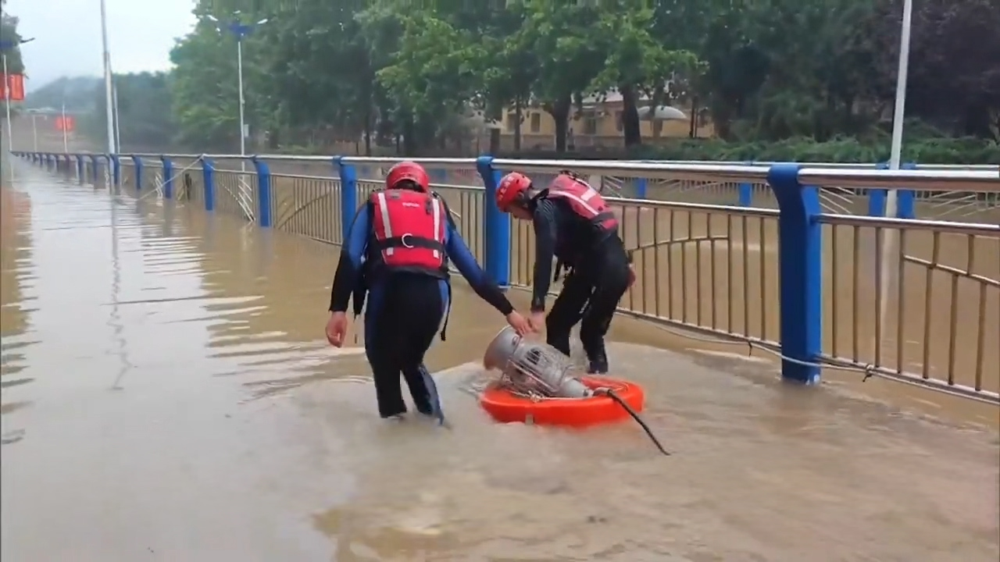
7 月 13 日台风中心位于江苏徐州新沂，其远距离水汽输送与冷空气结合，在华北、东北制造持续强降雨。中央气象台同时发布台风蓝色、暴雨橙色预警，自然资源部与中国气象局联合发布红色地质灾害气象风险预警，水利部发布红色山洪灾害气象预警；水阳江、浑河、蚂蚁河等相继发生编号洪水。国家防灾减灾救灾委员会针对河北暴雨洪涝启动国家四级救灾应急响应，并安排中央预算内投资 3000 万元支持灾后恢复。
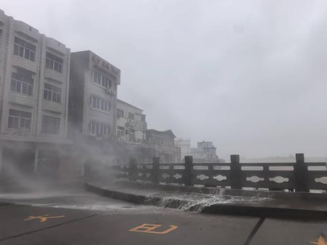
三个远洋台风 50 天内先后登陆同一街道——第 9 号「巴威」(7·11，1949 年以来 7 月登陆浙江最强)、第 13 号「白海豚」(8·09，奔袭约 7000 公里，给浙江带来最强降雨)、第 18 号「沙德尔」(8·28，12 级登陆且撞上天文大潮)。同一街道三连登为有观测记录以来首次，浙江过程降水量居 1949 年以来台风第一，全国 21 站日降水破历史极值。
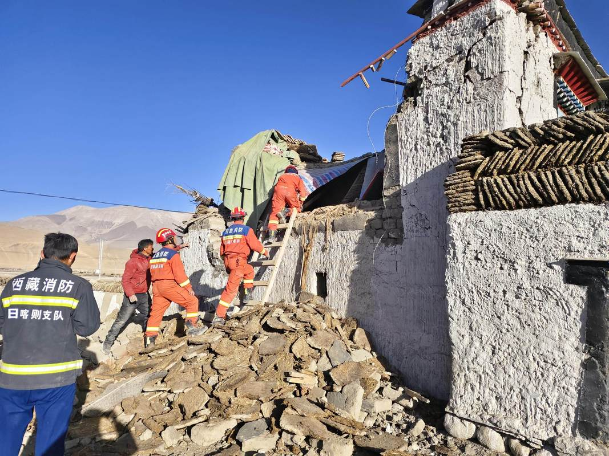
2026 年我国最大地震，震源深度 10 公里，震中平均海拔约 4864 米。玛如乡、岗切乡土坯房成片垮塌，高寒缺氧加大搜救难度；截至 11·01 共 16 人遇难、76 人受伤，转移安置 12964 人。伤亡低于同震级常见水平，与地广人稀、牧场转场住帐篷、房屋抗震加固有关；重建要等 2027 年开春。